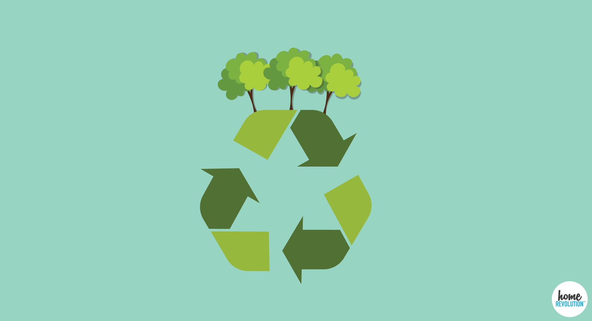
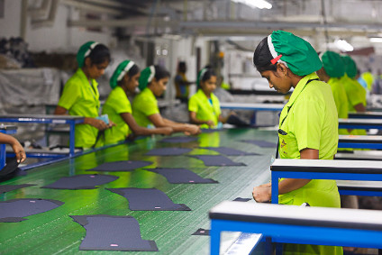

Benefits Of Eco Friendly items
The biggest advantage, of course, is the ability to save the environment. but here are few more eco friendly benefits that will help you understand how much they are important;
- Lower Costs
- Sustainable to the World
- Healthier Living
- Better Quality of Life
- Recycled
- Reusable
- Lower Maintenance
- Cost-Savings on Energy Bill
With the right eco-friendly goods, you can move forward easily knowing that you're not contributing any damage to the environment.

Manufacturers Of Eco-friendly Products
There are many manufacturers and businesses that are actively producing green products that are contributing directly to a clean, safer and more ecologically sustainable world for present and future generations.
Some of these organizations are listed below:
